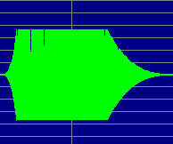
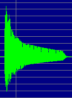
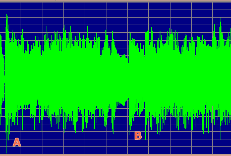

|
|
Mobileer MIDI Engine SynthesizerCONFIDENTIAL and PROPRIETARY - © 2002-5 Mobileer, All Rights Reserved |
|
|
Mobileer MIDI Engine SynthesizerCONFIDENTIAL and PROPRIETARY - © 2002-5 Mobileer, All Rights Reserved |
Ringtones are often used to personalize mobile phones by playing the users favorite music. But the primary purpose of a ringtone must be to alert the user when they have an incoming call. This is particularly an issue in noisy environments such as airports and on the street. Care must be taken to ensure that the ringtones can be heard in those environments.
The amplifier and speaker for playing the ringtone must, of course be optimized for loudness and fidelity. The amplifier should be as powerful as possible without overdriving the speaker or causing an undue drain on the battery. The speaker must not be obscured by the case. The speaker must also be very tightly coupled to the case and if possible should have a convex horn to acoustically amplify the sound.
Also note that small speakers cannot produce low frequencies very well. It is typical for the frequency response to fall off drastically below 500 Hz. So tones below middle C should be used sparingly. You won't hear the bass notes but they will be contributing to the mix which will require that the overall volume be lowered to account for their presence.
The ear is most sensitive to sounds between 700 Hz and 6000 Hz, with a peak sensitivity at 4000 Hz. For comparison, middle C has a fundamental of 261 Hz. The C one octave above that is 523 Hz and then C above that is 1046 Hz. Complex instrument sounds tend to have strong partials that are 2 or 3 times the fundamental so a note in the first octave above middle C will have partials in the optimum range.
Another issue is whether the ringtone can get the attention of the user. If the music is similar to the sounds that may be occuring in the environment, then the users brain is likely to ignore the ringtone. For example, a pleasantly innocuous ringtone may be confused with background music if heard in a department store. So a ringtone that is less like normal music is more likely to be noticed. Thus ringtones with long high trills, dissonance, or unusual rhythms are more likely to be noticed.
The digital-to-analog converter (DAC) in the mobile phone is limited in the numeric range that it can support. In order to maximize loudness, and resolution, we want to use all of the available numeric range. The simplest technique is to adjust the amplitude so that the peak amplitude is at the maximum allowed value. This is called normalization. But it is possible for two tones, with similar frequency content, and identical peak amplitudes to have different loudnesses. This is because the perceived loudness is related more to the power of the sound than its amplitude. This is best quantified using the root-mean-square (RMS) value which is expressed by this pseudo-code:
LOOP for n = 1 to N : sumSquares += signal[n] * signal[n] mean = sumSquares / N RMS = sqrt( mean )
A variety of common instruments were measured for their peak amplitude and their RMS value. If we assume the the output is normalized for Peak Amplitude then the resulting RMS value, as a percentage of Peak Amplitude, can be used as a measure of relative loudness for an instrument.
| Instrument | RMS % |
|---|---|
| Acoustic Grand Piano | 31.4 |
| Harpsichord | 16.0 |
| Clavichord | 57.3 |
| Rock Organ | 31.5 |
| Church Organ | 58.7 |
| Tango Accordian | 64.7 |
| Distortion Guitar | 34.0 |
| Violin | 34.5 |
| Synth Voice | 12.3 |
| Trumpet | 28.2 |
| French Horn | 44.0 |
| Bassoon | 64.9 |
| Whistle | 59.0 |
| Telephone Ring | 61.6 |
Music tends to have some quiet and some loud passages. But for the purpose of a ringtone we want everything to be pretty loud. So we can measure the average loudness as a song progresses and raise or lower the gain to achieve a consistently loud output. This is called Dynamic Range Compression or Automatic Gain Control.
When a sudden peak is encountered in the music then the gain is lowered to prevent clipping. If there are a lot of peaks then the music volume is generally held at a low volume. For optimal loudness you want song material that does not have lots of peaks. Peaks generally occur if you have percussive instruments like xylophones or bells or drums that start at the same time. So if many percussive instruments start on the beat your loudness will suffer. For optimal loudness you should stagger your note attacks so that the peaks do not coincide. Spread the drum sounds around in the measure. You may also want to arpeggiate your chords so all the notes do not start at once. Also choose instrument that do not have percussive attacks, like violin and trumpet. Avoid percussive instruments like piano and steel guitar.
| Envelope of Tango Accordian |
Envelope of Acoustic Steel Guitar |
|---|---|
 Notice lack of peak at start of note. |
 Note peak at start of note. |
Another way to avoid peaks in the output is to avoid polyphony. When signals of various pitches are mixed, you occasionally get several waveforms reinforcing each other and creating a big peak. By using a monphonic signal, you have a more even result that allows the compressor to maximize the volume. It is counterintuitive but by using fewer instruments you can get a louder output when using Normalization.
The following image shows two chords played on a Synth Brass instrument. In the first chord at (A), the three notes all start at once and their peaks coincide. That defines the peak amplitude for this song, which you can see as a thin green line going down next to the(A). The second chord at (B) is arpeggiated so that the peaks do not coincide.

When a signal is amplified beyond the range of the DAC it must be clipped to prevent numeric wraparound. Essentially this is coded as:
if( input > MAX ) output = MAX; else if( input < MIN ) output = MIN; else output = input;
When this sort of clipping occurs, it creates sharp corners where the signal hits the rails. A non-linear amplifier or "soft clipper" can be used that will create rounded corners. This is not ideal but it sounds much better than hard clipping. By using this technique, one can push the gain of a song up to 1.5 or 2.0 times the normal volume. The loudest parts will clip but most of the song will just be louder. To do soft clipping, replace the last line of the above code with:
else output = 1.5 * (input - ((input^*input*input)/3));
As of May of 2004, the Mobileer ringtone engine enables SoftClipping by default to allow very loud rendering. It can be turned off by modifying "spmidi_config.h".
It is extremely difficult to predict how a ringtone downloaded off of the web will sound on a mobile device. The loudness can vary significantly from device to device depending on how the waveforms are shaped and the contours of the instrument's amplitude envelopes. The user of the device can hear these effects and make a judgement on how loud to play the ringtone. If they want a pristine sound with no distortion then they can reduce the volume to a clean level. If they want to blast out sound over the noise of an airport then they can crank the volume and pay the price of a little distortion. Each ringtone may have different loudness levels so it would be nice to give the user the ability to set the preferred level for a ringtone. This ringtone specific level would be multipled by the master ringtone volume that most phones offer.